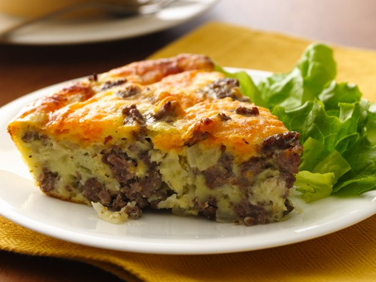

Gluten Free Impossibly Easy Cheeseburger Pie

Craving a cheeseburger but eating gluten free? Try our tasty cheeseburger pie thanks to Bisquick® Gluten Free mix.
Ingredients
- 1 lb lean (at least 80%) ground beef
- 1 medium onion, chopped
- 1/2 teaspoon salt
- 1/8 teaspoon pepper
- 1 cup shredded Cheddar cheese (4 oz)
- 1/2 cup Bisquick® Gluten Free mix
- 1 cup milk
- 3 eggs
Steps
- Heat oven to 400°F. Spray 9-inch glass pie plate with cooking spray. In 10-inch skillet, cook beef and onion over medium-high heat, stirring frequently, until beef is thoroughly cooked; drain. Stir in salt and pepper. Spread in pie plate; sprinkle with cheese.
- In medium bowl, stir Bisquick mix, milk and eggs until blended. Pour into pie plate.
- Bake 25 to 30 minutes or until knife inserted in center comes out clean.